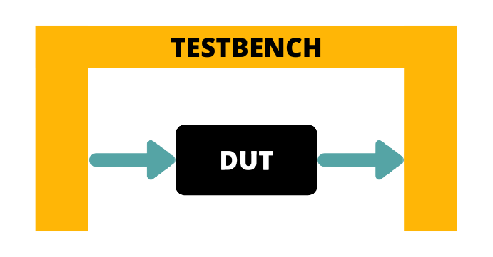

🔌 What is DUT?
DUT stands for Design Under Test. It refers to the actual hardware design written in HDL, such as Verilog or VHDL, that is being tested in a verification environment.
In the post-silicon validation phase (after the chip is fabricated), the term DUT is commonly used. However, during pre-silicon validation (simulation and emulation before fabrication), the design is often referred to as the Design Under Verification (DUV).
